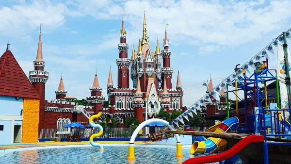

POPULAR PLACES

Ancol
North Jakarta
Taman Impian Jaya Ancol otherwise known as Ancol Dreamland is an integral part of Ancol Bay City, a resort destination located along Jakarta's waterfront, in Ancol (Kelurahan), Pademangan, Indonesia. It is owned by PT. Pembangunan Jaya Ancol Tbk, a subsidiary of Pembangunan Jaya Group. Ancol Dreamland opened in 1966 and is currently the largest integrated tourism area in South East Asia, boasting an international championship golf course, a theme park, hotels and other recreational facilities.

TMII
East Jakarta
Taman Mini "Indonesia Indah" (TMII) is a culture-based recreational area located in East Jakarta, Indonesia. It is operated by Yayasan Harapan Kita, a foundation established by Siti Hartinah, the first lady during most of the New Order and wife of Suharto, and still run by Suharto's descendants since his death. It has an area of about 100 hectares (250 acres). The park is a synopsis of Indonesian culture, with virtually all aspects of daily life in Indonesia's 26 (in 1975) provinces encapsulated in separate pavilions with the collections of rumah adat as the example of Indonesian vernacular architecture, clothing, dances and traditions are all depicted impeccably.

Ragunan Zoo
South Jakarta
Ragunan Zoo is located in Pasar Minggu, South Jakarta, Indonesia. The zoo has a land area of 140-hectare (350-acre). The zoo has an aviary and included a primate centre, and employs over 450 people. Many of the animals are endangered and threatened from all parts of Indonesia and the rest of the world. There are a total of 3,122 animal specimens including birds. Laid out in a lush tropical setting, rare animals such as crocodile, gorilla, orangutan, tapir, anoa, sumatran tiger, babirusa and peacocks are given ample room.